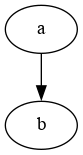
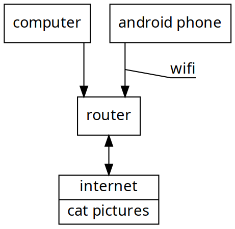

TLDR org mode + graphviz
Org mode is pretty cool. Directed graphs are pretty cool. Let’s see how they go together.
Org mode#
After installing the graphviz package, you will have the dot command. If you use it in with an org
mode source block like so:
#+BEGIN_SRC dot :file ./dot-example.png :cmdline -Kdot -Tpng
digraph {
a -> b
}
#+END_SRC
You can eval the block with C-c C-c and then view it inline in emacs by using
org-toggle-inline-images.
These blocks also export! Just like in this page itself!

The Dot language#
The dot language spec can be found here. I don’t find that too helpful on it’s own, so here are some notes:
Primitives that matter:
- a
nodeis a bubble/self contained item that will be connected. - an
edgeis the line that connect nodes. - a
graphis a the relation as a whole.
A list of attributes that can be applied to these can be found here: https://www.graphviz.org/doc/info/attrs.html
Some nice node options can be seen here: https://www.graphviz.org/doc/info/shapes.html#polygon
Here is an example that shows how attributes are set and some defaults I like:
#+BEGIN_SRC dot :file ./dot-example.png :cmdline -Kdot -Tpng
digraph {
// config:
// TBLR, top bottom left right, the direction of the graph.
graph [rankdir=TB];
// you can have multiple attrs per statement
graph [dpi=150 splines=ortho];
edge[decorate=true];
node [shape=box];
// definitions:
// nb: setting definitions on their own is useful in larger graphs
computer [label=computer];
// quotes are optional, I'm using them when there are spaces
phone [label="android phone"];
router [label=router];
// record syntax: | for horizontal, {|} for vert
internet [shape=record label="{internet|cat pictures}"]
// relations:
computer -> router;
phone -> router [label="wifi"];
router -> internet [dir=both];
}
#+END_SRC
